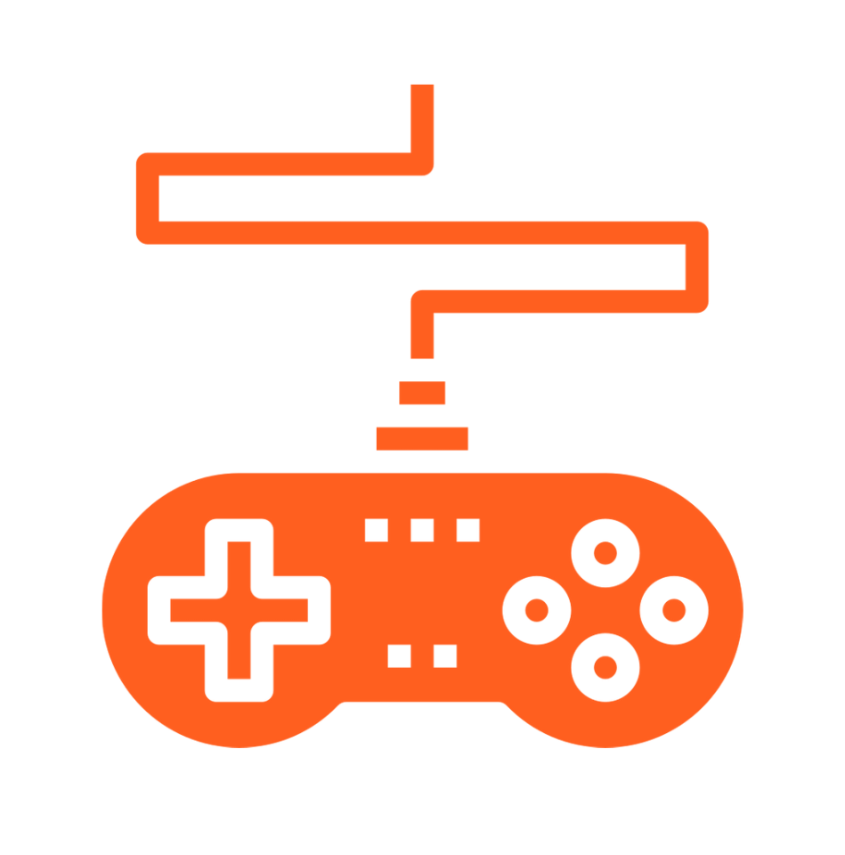

Watching Anime
I watch anime to pass the time, to avoid boredom, and occasionally to broaden my perspective on life by
reflecting on the characters and how they live their lives in the story.
Cycling
I enjoy riding my bike because it gives me a satisfying amount of pain. For example,
when climbing difficult hills, the high gradient
of the mountain makes you feel as if your heart
is about to explode, and that pain is one that I
enjoy while cycling because it makes me feel more alive.

Playing Video Games
I play games to pass the time and relieve stress,
but sometimes it is the game that causes me stress hehe.